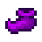
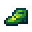

Inmunidad
Ir a la navegación
Ir a la búsqueda
La Inmunidad  es una estadística que afecta a tu probabilidad de recibir Bonificador maligno. No tiene efecto en la duración de tu invulnerabilidad tras recibir daño.
es una estadística que afecta a tu probabilidad de recibir Bonificador maligno. No tiene efecto en la duración de tu invulnerabilidad tras recibir daño.
Cada punto de Inmunidad reduce la probabilidad de sufrir un bonificador maligno en un 10%, de forma aditiva. Por ejemplo, al llevar los Zapatos del Genio, que proporcionan 6 puntos de Inmunidad, la probabilidad de sufrir un debuff es del 40%.[1] Si se lleva un equipo que proporcione suficiente Inmunidad total (+10 o más), el jugador puede quedar completamente libre de cualquier bonificador negativo.
Equipamiento
El siguiente equipamiento afecta a la Inmunidad.
Calzado
| Imagen | Nombre | Efecto |
|---|---|---|
| Botas de cuero | ||
| Botas de goma | ||
| Botas tundra | ||
| Botas térmicas | ||
| Botas de faquir | ||
| Botas espaciales | ||
| Botas de vaquero | ||
| Botas oscuras | ||
|  | Zapatos de genio | |
|  | Zapatos de duende | |
| Botas mágicas de Emily | ||
| Zapatos de bufón carbonizado | ||
| Botas de sirena | ||
| Zapatos de cristal |
Anillos
| Imagen | Nombre | Efecto |
|---|---|---|
| Banda de inmunidad |
Referencias
- ↑ Consulte DebuffingProjectile::behaviorOnCollisionWithPlayer en el código del juego.
Historial
- 1.5: Ahora la Inmunidad reduce la probabilidad de cualquier bonificador maligno de estado, en lugar de sólo los bonificadores negativos de proyectiles.
| Habilidades y Estadísticas | |
|---|---|
| Habilidades | Agricultura • Combate • Minería • Pesca • Recolección |
| Estadísticas | Ataque • Daño crítico • Defensa • Golpe crítico • Inmunidad • Magnetismo • Peso • Suerte • Velocidad |